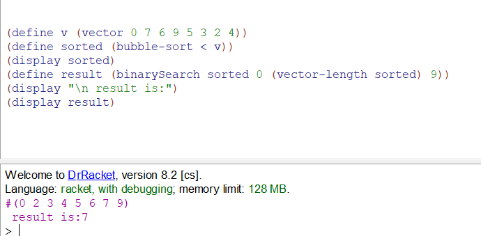
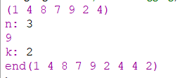

Мета: Опанувати теоретичні основи обробки структур типу векторів і матриць, стеків та черг мовами функціонального програмування та розробити програми їх реалізації
12.1. Створити вектор чисел. Відсортувати вектор за методом бульбашкового сортування. Здійснити пошук заданого користувачем елемента масиву за методом бінарного пошуку.
Аналіз завдання
При виконанні даного завдання, було реалізовано метод сортування бульбакою, та пошук елементу за допомогою бінарного пошук. Для якого якраз і потрібно що масив був відсортований.
Код програми
#lang racket
;сортування бульбашкою
(define (bubble-sort = end start)
(begin
(set! mid ( + start (floor(/ ( - end start) 2 ))) ) ;беремо середину масиву
(if (= (vector-ref vector mid) x )
mid (if (> (vector-ref vector mid) x ); якщо середина більше за шуканий тоді рекурсивно шукаємо в масиві від 0 до середини, якщо менше - то навпаки
(binarySearch vector start (- mid 1) x) (binarySearch vector (+ mid 1) end x )
))
)
-1
))
)
(define v (vector 0 7 6 9 5 3 2 4))
(define sorted (bubble-sort < v))
(display sorted)
(define result (binarySearch sorted 0 (vector-length sorted) 9))
(display "\n result is:")
(display result)
Результати
Оцінка достовірності результату
Спочатку можно побачити відсортований масив чисел, числа йдуть по зростанню з ліва на право. Потім ввиводиться індекс шуканого елементу, а сам 9. (0 2 3 4 5 6 7 9) - і справді 9 знаходиться на 7 індексі даного масива. Таким чином, можно зробити висновок, що код відпрацьовує коректно.
12.2. Створити чергу з цілими числами. Вибрати з черги елементи, які є кратними заданому числу і надрукувати їх. Додати до черги парні числа. Кількість елементів, що потрібно додати або вибрати визначає користувач.
Аналіз завдання
При виконанні даного завдання, було реалізовано роботу з чергами: додавання елементу та обхід черги.
Код програми
#lang racket
;додати елемент до черги
(define (push-queue n)
(begin
(set! queue (append queue (list n)))
)
)
;функція що виводить лише ті числа що кратні заданому
(define (show-numbs source n)
(cond [(empty? source) (display " ")]
[else
(begin
(define current-number (car source))
(cond [(= (remainder current-number n) 0) ;якщо остаток від діленння елементу черги та заданого числа дорівнює ноль, то виводим його
(begin (display current-number) (display " "))
]
)
(show-numbs (cdr source) n)
)
]
)
)
;додає до черги н-кількість парних чисел
(define (addnumbers source n)
(if (= n 0) (display "end") (begin (push-queue (* n 2)) (addnumbers source (- n 1)) ))
)
(define queue (list))
(push-queue 1)
(push-queue 4)
(push-queue 8)
(push-queue 7)
(push-queue 9)
(push-queue 2)
(push-queue 4)
(display queue)
(display "\n")
(display "n: ")
(define n (read))
(show-numbs queue n)
(display "\n")
(display "k: ")
(define k (read))
(addnumbers queue k )
(display queue)
Результати коду
Оцінка достовірності результату
Спочатку можно побачити виведену на екран чергу з елементами. На далі, було введено число 3, для того щоб вивести числа з черги, які кратні 3. Результат є 9, що є вірним, оскільки числа: 1 4 8 7 2 4 не є кратними 3. Далі було введено число 2, це вказано кількість елементів скільки потрібно додати до черги. (1 4 8 7 9 2 4) - к-сть елементів 7, (1 4 8 7 9 2 4 4 2) - к-ть елементів 9, додалось 2 нових елемента, стільки ж скільки було введено. Таким чином можно зробити висновок, що код відпрацьовує так як потрібно.
Висновки
В лабораторній роботі було реалізовано обидва завдання, що передбачають маніпуляції з векторами, а також - списками та чергами, реалізованими через списки. В цілому, завдання є доволі легким, щоправда труднощі виникли з розумінням умови завдання. Наприклад у 2 завданні написано "Кількість елементів, що потрібно додати або вибрати визначає користувач" - через "або" невідомо, яку саме реалізацію зробити.